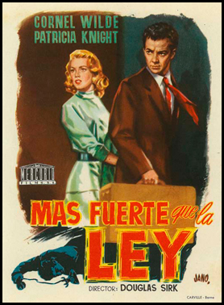
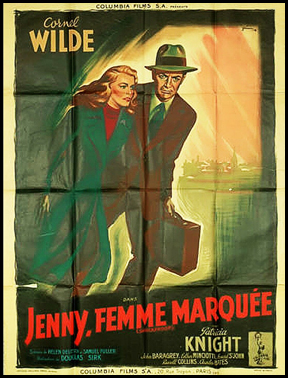
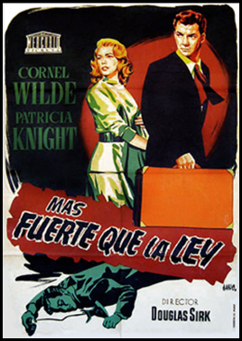

Shockproof
Cornel Wilde
John Baragrey
Esther Minciotti
Howard St. John
SYNOPSIS
Griff Marat, is a parole officer who falls in love with a parolee, Jenny Marsh. Marsh had gone to prison in order to protect Harry Wesson, a gambler with whom she was previously having an affair.
Griff hires Jenny as a caretaker for his blind mother. Griff has political ambitions that Harry would like to ruin, so, knowing it is against regulations for the parolee and parole officer to be involved, Harry encourages Jenny to accept Griff's romantic advances. Jenny knows the regulations too, but realises she has fallen in love with Griff and they get married; she makes one more trip to speak to Harry, to tell him that she truly loves Griff. During their conversation, Harry threatens to reveal letters she had written him, in which she expressed her love. Jenny points Harry's own gun at him and, after a brief struggle, he ends up shot and seriously wounded.
Griff and Jenny attempt to flee to Mexico. This fails but, willing to do anything to keep his wife from going back to jail, Griff takes a job in an oil refinery. Their photographs regularly appear in newspapers, but the last straw for Jenny is when a paper which includes their pictures is delivered to every neighbor in their refinery community. The couple decide to go back and turn themselves in. When the police take them to Harry in the hospital, he clears Jenny's name by swearing that the shooting was an accident.
The director of Shockproof, Douglas Sirk, said he took the assignment because the film dealt with one of his favourite themes: the price of flouting taboos. As described by the New York Times: "The lurid setup and obsessive-loner-versus-the-system mechanics are pure Samuel Fuller. Mr. Sirk's personality is expressed in the film's affection for its screwed-up characters, in the poetic deployment of mirrors, windows and stairways, and in the low-angled wide shots of Griff's house, a space that seems both nurturing and oppressive."
In Samuel Fuller's original script, the film ended with a violent rebellion by Marat against the system that kept him and Marsh apart. The studio had National Velvet scriptwriter Helen Deutsch step in to pen a soft-suds rewrite. A number of Fuller's screenplays, including The Naked Kiss, The Baron of Arizona, House of Bamboo, Forty Guns, The Big Red One and this film, featured a lead character called Griff.


